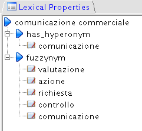

Lexical Properties Panel

In the
Lexical Properties
panel WordNet relations like
hyponym
y and
fuzzynymy
(as Related Term)
for the selected
term
with respect to other terms are shown in a hierarchical view,
for the
selected local language